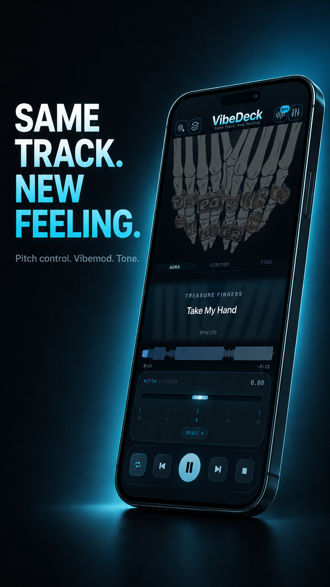
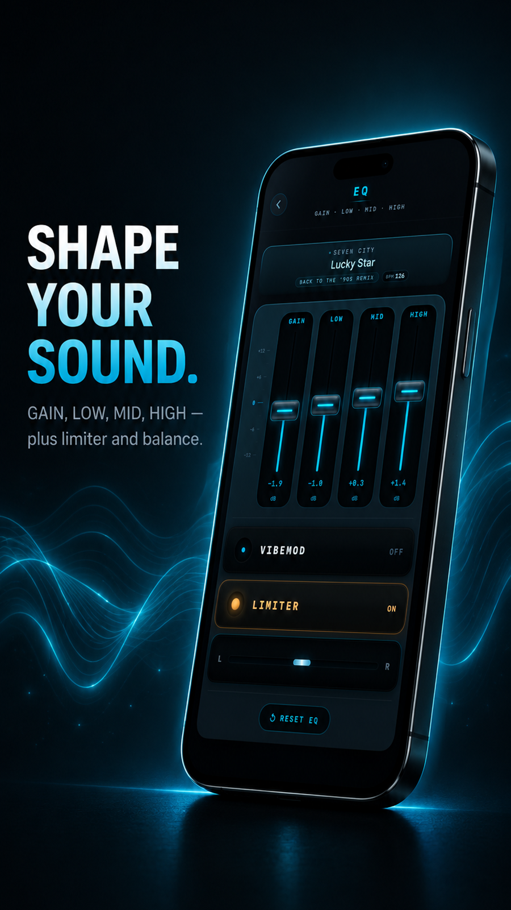
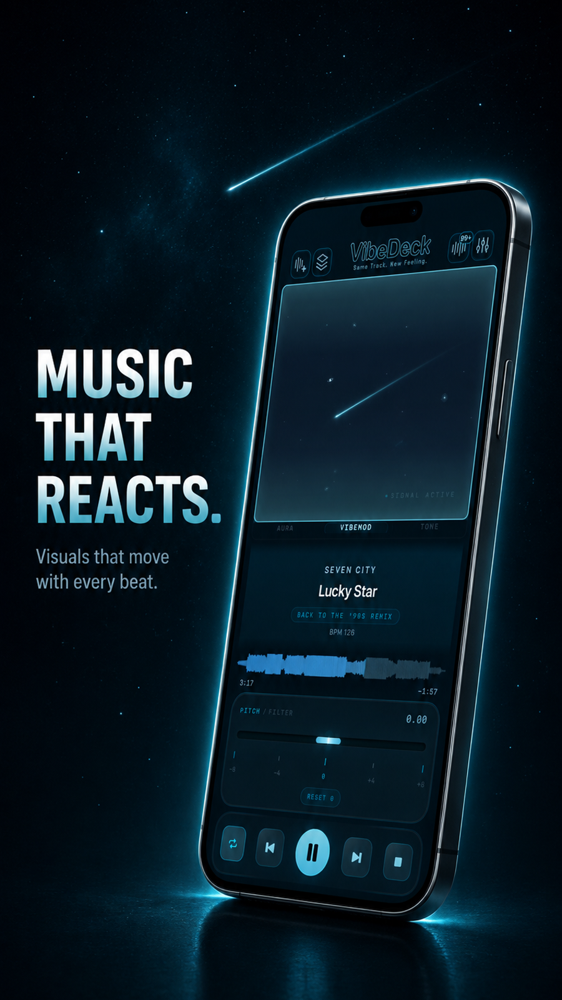
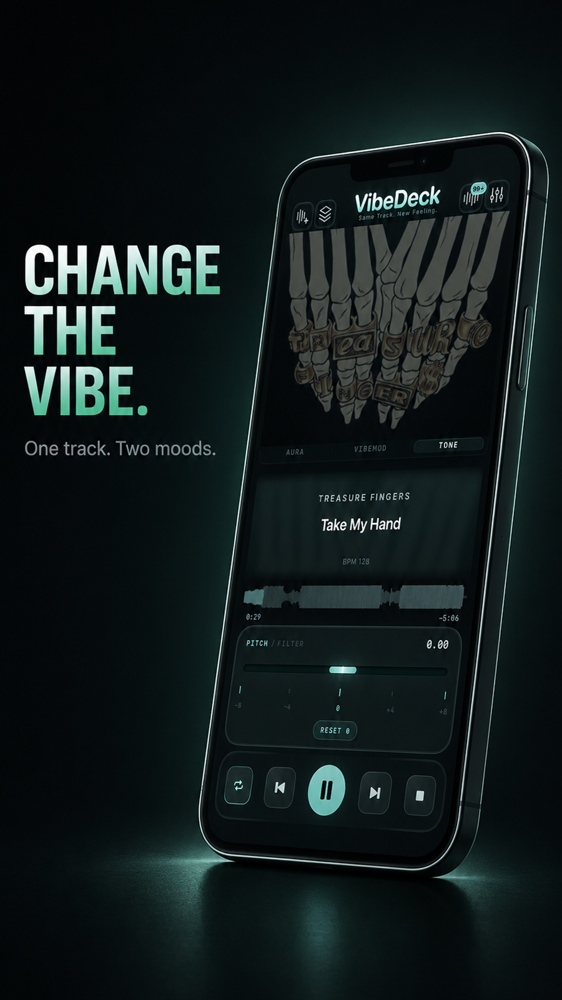
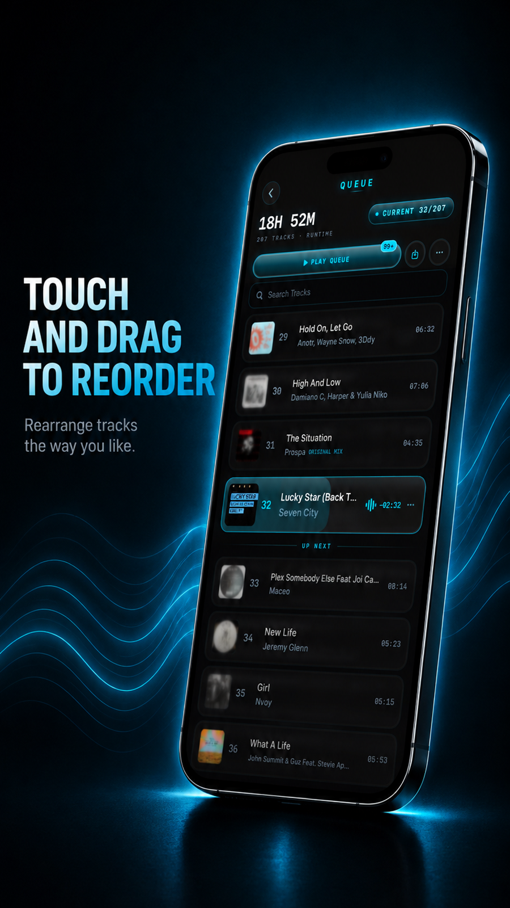

Playback
Waveform, timing, transport controls, pitch shifter, and tempo control for local music files.
Offline music player for iPhone & iPad
Offline music player for iPhone and iPad that plays MP3, FLAC and WAV from your local files — with equalizer, pitch and tempo control. No WiFi needed.

VibeDeck is built around the screen that matters most: your local music player. Queue, EQ, pitch, tempo, and sound tools orbit the track instead of stealing focus from it.
Workflow
VibeDeck keeps the current track readable while the queue and EQ stay one move away. This offline music player is built for low light, fast scanning, and deliberate sound shaping from your local files.




Waveform, timing, transport controls, pitch shifter, and tempo control for local music files.
Search, current track, up-next flow, runtime, artwork, and DJ-style set preparation.
3-band equalizer, bass booster, VibeMod, limiter, and hi-fi audio shaping tools.
App Store
VibeDeck 1.0.4 is available now for iPhone and iPad. An offline music player with EQ, pitch, tempo and DJ-style tools for your local files. No account. No ads. No tracking.
VibeDeck is an offline music player for people who keep their own library close. It plays local MP3, FLAC, WAV, AAC, and M4A files without WiFi, an account, ads, or tracking. Use the equalizer, pitch shifter, tempo control, waveform, and DJ tools to shape the same track into a new feeling. Your music stays on your device.